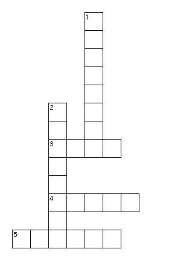
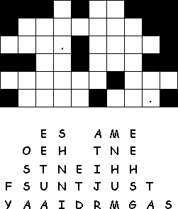

This Week: Acts 5:27-32, Psalm 118:14-29 or Psalm 150, Revelation 1:4-8, John 20:19-31
Elementary School Pew-work
Use the following words to fill in the blanks: disciples Sunday Jesus hands Holy Spirit forgiven
The __________ were afraid of the Jewish leaders, and on the evening of that same __________ they locked themselves in a room. Suddenly, __________ appeared in the middle of the group. He greeted them and showed them his __________and his side. When the disciples saw the Lord, they became very happy.
After Jesus had greeted them again, he said, "I am sending you, just as the Father has sent me." Then he breathed on them and said, "Receive the __________ __________. If you forgive anyone's sins, they will be __________. But if you don't forgive their sins, they will not be forgiven.
|
 |
Across 3. things that break our peace with God 4. What Jesus wishes for us 5. A word that, in Greek and Hebrew also means "wind" and "spirit" Down 1. at peace after you have done wrong 2. A student of a master
|
 |
1. How did Jesus greet his disciples?
_____________________________________________________________
2. Why did Jesus breathe on the disciples?
_____________________________________________________________
3. To whom did Jesus givethe power to forgive and to retain the sins of the people?
_____________________________________________________________
4. What was Jesus' final blessing to the people?
_____________________________________________________________
Next week: Acts 9:1-6, (7-20), Psalm 30, Revelation 5:11-14, John 21:1-19